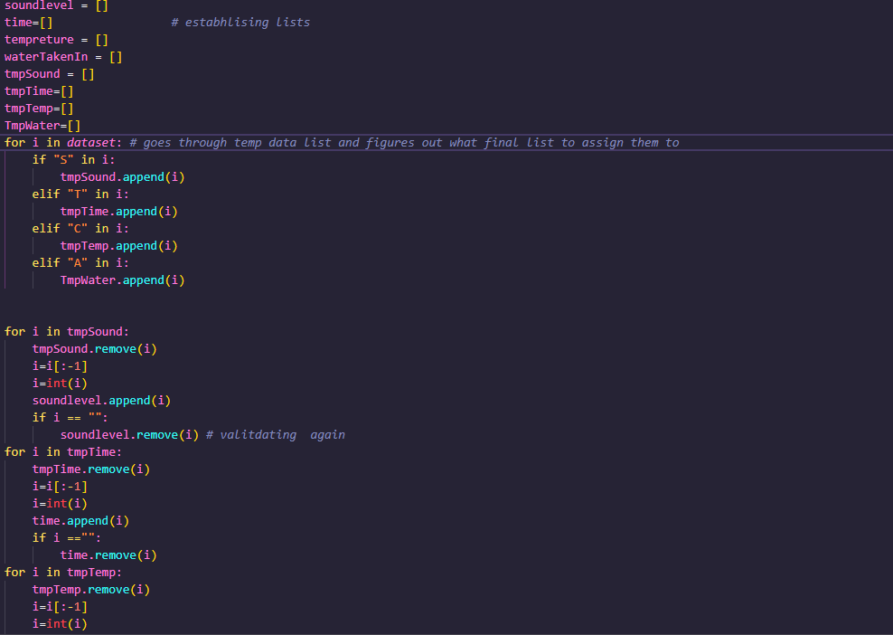

Create Stage
After the design and plan was finished I got to work creating the artefact
Weekly Log
Week 1
Week 1 was spent relearning MakeCode as it had been a while since i had used the website. I also ensured that I made use of the new login feature that was available to ensure my code was in fact saved.
I got to work on a test code to ensure that the Microbit was able to send data over the serial port and that my PC could receive the data. Once I knew that the Microbit was able to send data I got to work on the main code. I initialized all the sensors in the code and started a loop for every 1000ms. For each data type I sent over I attached a letter to it for easier validation

Week 2
For the next part of my artefact I wanted to have a timer component to it. This took additional research and i discovered a stop watch code available on the microbit website. I then modified this code to suit my needs and integrated it with my main body of code. It took me a while to figure out but I was able to get it working with my code as well as only starting once I pressed the A button. I also set up an alarm system for the artefact that played a sound after 30 minutes had elapsed. To find the correct number for the time required a lot of trial and effort
Week 3
This week I got started on my python code. I used the serial library to figure out which comport the mircrobit was connected to and then I used the pyserial library to read the data from the microbit. I then used the csv module to create a new csv file called tmp.csv I also used it to set the baudrate to accommodate the microbit. The code then checks if the data is not null or contains any special characters sent by the microbit
Week 4
Week 4 I started my main python program and called it dataProcessing.py. I first imported all the library's I thought I would need. I then opened the csv and took the data into a list known as tmpList. I removed the last input as I knew from my Alts that it was blank. I then created a piece of code that sorted the list into the smaller lists with all the correct values. I then calculated the means and informed the user about their environment

 *note this image is cut off
Week 5
On week five, I set about coding my model (will be talked about in depth). I also did both other remaining advanced requirements. I also had to turn many of my pervious items of code into functions that could be imported to save me having to copy and paste the code into the program twice. This included the part of the code that sorted the lists . This can now be found in the ListSorter.py file. I also coded functions to create the new datasets for my 'What if ' questions and i also added the graphing code through out the main dataProcessing.py file.

 * not all code shown but it is all labeled in the dataProcessing.py file
* not all code shown but it is all labeled in the dataProcessing.py file Studyscore Model
The part of my code I have chosen to focus on was my studyscore model. I created the model that takes in the values of the means what the microbit of the dataset I created sends as well as the time value.The model starts by initializes the study score itself starting at 50. I found it starting at 50 had the best results for what I was trying to achieve. The model takes in the average of the sound levels and using an if statement if the sound is to loud removes 40 and if it is quite it adds 20. It then checks the temperature values and checks if it is within a certain range, if it is 20 is added to the score and if it is not 30 is taken away. When time is entered into the model it is as a list, each item in the list is checked is it is over 30 minutes in microbit time. If it is over 30 minutes and under an hour 5 is added and if not 5 is taken away. The model takes in the mean of “water taken in” which is the gyro meter readings and checks it against a figure I determined to be most likely the person having a drink of water. If it is above this average I added 1 to hydration and used this score to add values for different levels of hydration
Issue with Graphing
When trying graph I ran into number of issues with how the graphs looked. I initially attempted to use the .plot feature but after struggling to get the lines right I changed them to bar charts using the .bar feature. This led to more promising initial results but after further inspection they did not seem to be correct. I noticed the graph in the bottom right was not matching with expectations

In an effort to fix this issue I changed the weighting in the tempToHigh function to very high levels but the issue persisted
After lots of trial and error and using the Thonny debugger I found for the last graph I was graphing the wrong studyscore list. I was graphing studyscore, instead of studyscoresTempreture. This allowed me to get the correct graphs


Unit Testing
For my unit test i decided to test my mean function which can be found in mean.py. The way I did this was to create a separate file called unitTest.py. I imported my mean function and then ran it against a list of lists. Then ran the same lists against the statistics.mean function and compared the results.